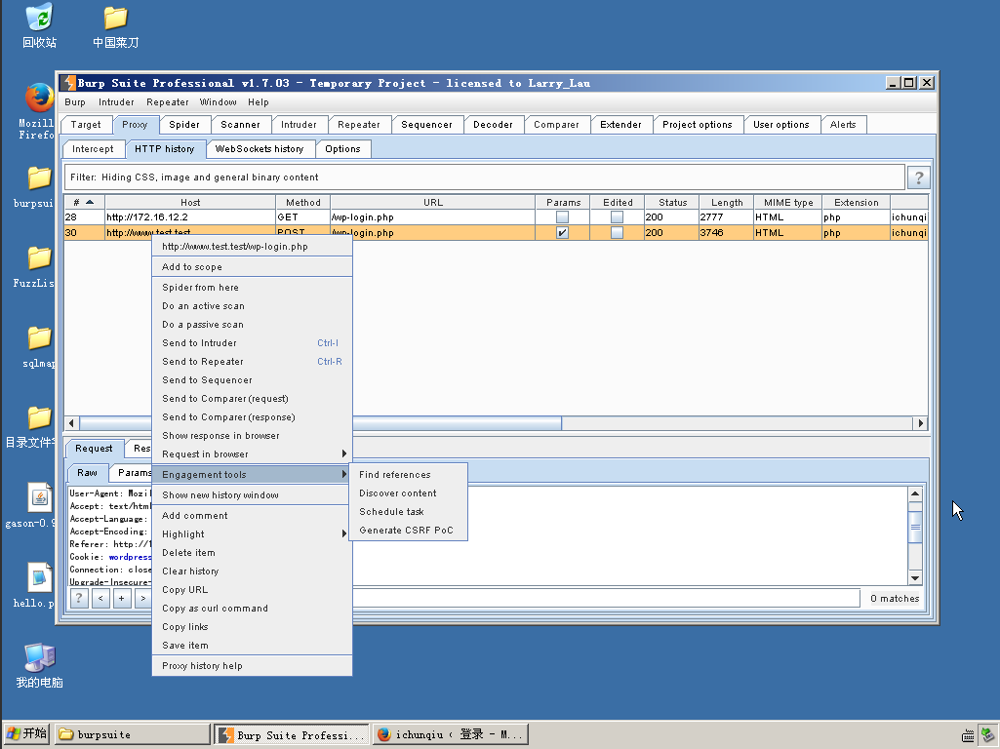

网络安全
1
- SQL注入（SQL Injection）测试：SQL注入是一种常见的网络安全漏洞，攻击者利用此漏洞通过在应用程序的输入字段中插入恶意的SQL语句来执行未经授权的数据库操作。SQL注入测试旨在发现这种漏洞，以便开发人员可以修补它们。测试者尝试通过在输入字段中插入各种SQL语句，包括但不限于恶意查询、更新或删除数据库中的数据，以验证是否存在漏洞。通过这种测试，开发团队可以修复潜在的漏洞，从而增强应用程序的安全性。
- 跨站脚本（XSS）测试：跨站脚本是另一种常见的网络安全漏洞，攻击者利用此漏洞将恶意脚本注入到网页中，从而在用户浏览页面时执行恶意操作。XSS测试旨在检测网站或应用程序中的潜在XSS漏洞。测试者尝试在各种输入字段中插入恶意脚本，例如JavaScript代码，以验证是否存在漏洞。通过这种测试，开发团队可以修复潜在的XSS漏洞，以防止攻击者利用它们对用户进行攻击。
在网站中，通常的情况是：
index.html：通常是网站的主页或默认页面。它可能包含有关网站的概述、导航链接以及其他内容。
admin.html：这通常是管理员页面，用于管理网站或应用程序的各种功能。管理员页面通常需要身份验证，并提供对用户、内容或系统设置的访问权限。
system.html：这通常是系统管理页面，用于管理网站或应用程序的后端系统功能。这可能包括对数据库、服务器设置、日志等的访问和管理。
相似的页面可能包括：
- login.html：用于用户登录的页面。
- register.html：用于用户注册的页面。
- profile.html：用户个人资料页面，允许用户查看和编辑其个人信息。
- contact.html：联系页面，允许用户发送消息或反馈给网站管理员。
- about.html：关于页面，提供有关网站或组织的信息和历史。
HTTP（Hypertext Transfer Protocol）是一种用于传输超文本的协议。在Web开发中，有两种主要的HTTP请求方法：GET和POST。它们在如何向服务器发送数据以及如何从服务器接收响应方面有所不同。
GET请求：
- GET请求用于从服务器获取数据。通常用于获取页面、图片、文件等资源，以及通过URL参数将数据发送给服务器。
- 数据通过URL的查询字符串（query string）发送，参数和值之间用
?分隔，参数之间用&分隔，例如：http://example.com/page?name=John&age=30。 - GET请求的数据会显示在URL中，因此不适合传输敏感信息。
- GET请求可以被缓存，以及被添加到浏览器的历史记录中。
- 由于数据以明文形式传输，对于较大的数据量或包含敏感信息的数据，不适合使用GET请求。
POST请求：
- POST请求用于向服务器提交数据。通常用于提交表单数据、上传文件等操作。
- 数据通过请求的主体（body）发送，而不是URL，因此不会在URL中暴露数据。
- POST请求的数据不会被缓存，也不会被添加到浏览器的历史记录中。
- POST请求可以发送大量数据，也更安全，因为数据不会显示在URL中，但仍然可以使用HTTPS协议进行加密。
- POST请求适用于敏感信息或需要更多安全性的情况。
总的来说，GET请求适合用于获取数据，并且可以通过URL直接访问，而POST请求适合用于提交数据，特别是涉及敏感信息的情况，因为数据不会在URL中暴露。
- BurpSuite： Burp Suite是进行Web应用安全测试集成平台。它的各种工具无缝地工作在一起，以支持整个测试过程中，从最初的映射和应用程序的攻击面分析，通过发现和利用安全漏洞。
基础配置课程
BurpSuite初配置
设置JVM内存大小，Java虚拟机（Java Virtual Machine）的缩写，负责在不同的计算机平台上执行Java字节码（Java bytecode）。
Burp Suite自己会自动分配最大的可用内存，具体实际分配了多少内存，默认一般为64M。
1 | java -jar Xmx128M BurpLoader.jar |
配置BurpSuite代理
Burp Suite代理工具是以拦截代理的方式，拦截所有通过代理的网络流量，如客户端的请求数据、服务器端的返回信息等。Burp Suite主要拦截http和https协议的流量，通过拦截，Burp Suite以中间人的方式，可以对客户端请求数据、服务端返回做各种处理，以达到安全评估测试的目的。
BurpSuite上：在Proxy（代理）上的options里的Running查看是否勾选。
浏览器代理：选项-高级-网络-设置-选择手动代理，http代理一栏填写127.0.0.1，端口一栏写8080（浏览器会不同）
BurpSuite之Proxy模块
拦截功能确认：Proxy-Intercept,可以看到Intercept is on.
打开浏览器，输入网址，此时数据流量会经过Burp Proxy并暂停，直到带点击Forward.
拦截流量的消息分析：Raw，headers，Hex，Params
Forward功能是当你查看过消息或者重新编辑过消息之后，点击此按钮，将发送消息至服务器端。
Action的功能是除了将当前请求的消息传递到Spider、Scanner、Repeater、Intruder、Sequencer、Decoder、Comparer组件外，还可以做一些请求消息的修改，如改变GET或者POST请求方式、改变请求body的编码，同时也可以改变请求消息的拦截设置。如不再拦截此主机的消息、不再拦截此IP地址的消息、不再拦截此种文件类型的消息、不再拦截此目录的消息，也可以指定针对此消息拦截它的服务器端返回消息：
SSL与高级代理
HTTPS协议是为了数据传输安全的需要，在HTTP原有的基础上，加入了安全套接字层SSL协议，通过CA证书来验证服务器的身份，并对通信消息进行加密。
SSL隐形代理，配置hosts文件，Windows操作系统下的目录位置C:\Windows/System32/drivers/etc/hosts，而Linux或者Unix下的目录为/etc/hosts，记事本打开该文件，添加如下行：
1 | 127.0.0.1 example.com |
这样的意义就是把所有关于example.com的请求指向本机。
常用模块系列
BurpSuite之Target模块
目标域设置Target Scope
这里域名或主机名就是我们说的作用域；如果我们想限制得更为细粒度化，比如，你只想拦截login目录下的所有请求，这时我们也可以在此设置，此时，作用域就是目录。
站点地图 Site Map
在使用攻击面分析功能时，需要注意，此功能主要是针对站点地图中的请求URL进行分析，如果某些URL没有记录，则不会被分析到。同时，在实际使用中，存在很点站点使用伪静态，如果请求的URL中不带有参数，则分析时无法区别，只能当做静态URL来分析。
攻击面分析
攻击面分析是Burp Suite 交互工具（Engagement tools）中的功能，打开Analyze Target。
能看到概况、动态URL、静态URL、参数4个视图
BurpSuite之Spider模块
Burp Spider的功能主要使用于大型的应用系统测试，它能在很短的时间内帮助我们快速地了解系统的结构和分布情况
Spider控制control
Spider 状态除了显示当前进度、传输情况、请求队列等统计信息外，还有Spider运行/暂停按钮与清空队列按钮，分别用来控制Spider是否运行和队列中的数据管理。而Spider 作用域是用来控制Spider的抓取范围，从图中我们可以看到有两种控制方式，一种是使用上一章讲的Target Scope，另一种是用户自定义。当我们选中用户自定义按钮
可选项设置Options
Spider可选项设置由抓取设置、抓取代理设置、表单提交设置、应用登陆设置、蜘蛛引擎设置、请求消息头设置六个部分组成。
BurpSuite之Scanner模块
Burp Scanner的功能主要是用来自动检测web系统的各种漏洞，我们可以使用Burp Scanner代替我们手工去对系统进行普通漏洞类型的渗透测试，
Burp Scanner基本使用主要分为以下14个步骤：
- 确认Burp Suite正常启动并完成浏览器代理的配置。
- 进入Burp Proxy，关闭代理拦截功能，快速的浏览需要扫描的域或者URL模块。当我们浏览时，默认情况下，Burp Scanner会扫描通过代理服务的请求，并对请求的消息进行分析来辨别是非存在系统漏洞。同时，当我们打开Burp Target时，也会在站点地图中显示请求的URL树。
扩展模块系列
intruder模块
它的工作原理是：Intruder在原始请求数据的基础上，通过修改各种请求参数，以获取不同的请求应答。每一次请求中，Intruder通常会携带一个或多个有效攻击载荷（Payload),在不同的位置进行攻击重放，通过应答数据的比对分析来获得需要的特征数据
暴力破解
Repeater模块
使用Repeater来进行请求与响应的消息验证分析，比如修改请求参数，验证输入的漏洞；修改请求参数，验证逻辑越权；从拦截历史记录中，捕获特征性的请求消息进行请求重放。
Comparer模块
提供一个可视化的差异比对功能，来对比分析两次数据之间的区别。使用中的场景可能是：
- 枚举用户名过程中，对比分析登录成功和失败时，服务器端反馈结果的区别。
- 使用 Intruder 进行攻击时，对于不同的服务器端响应，可以很快的分析出两次响应的区别在哪里。
- 进行SQL注入的盲注测试时，比较两次响应消息的差异，判断响应结果与注入条件的关联关系。
Decoder模块
Burp Decoder的功能比较简单，作为Burp Suite中一款编码解码工具，它能对原始数据进行各种编码格式和散列的转换。其界面如下图，主要由输入域、输出域、编码解码选项三大部分组成。
高级功能系列
数据查找和扩展功能的使用
BurpSuite高级功能在界面布局上主要集中在两大块，一是菜单栏，另一个是右击菜单的Engagement tools。
Burp 菜单下包含的数据查找（Search）、组件状态存储、组件状态恢复三部分。
- 数据查找（Search） 数据查找功能主要用来快速搜索Target、Proxy、Repeater三个组件中的请求和应答消息的内容，
- 组件状态存储和恢复，与组件状态和恢复相关的子菜单比较多，分别是： Save state 保存当前Burp的状态，主要保存站点地图、Proxy历史日志、扫描的结果和正在扫描的队列、Repeater当前和历史记录、Suite其他工具组件的所有配置信息。当我们点击【Save state】时，Burp将会提示我们是否只保存Scope中的数据
Intruder菜单主要用于自动化攻击的相关配置。
Start attack开始发起攻击Open save attack重新加载之前保存的Intruder攻击文件Save attack config、Load attack config、Copy - attack config，主要控制Intruder的攻击配置信息Automatic payload position主要用于控制payload的使用方式：替换参数值或者追加参数值Configure predefined payload lists用于控制Burp默认的payload字典值，当我们点击此菜单时，会弹出payload字典配置文件的界面，
Repeater Intruder菜单主要用于Repeater工具的控制
Update Content-Length当执行Repeater操作时，自动更新消息头中的Content-LengthUnpack gzip /deflate解压压缩文件Follow redirections跳转控制，可以选择从不跳转、同一站点内跳转、Scope内跳转、始终跳转四种的其中之一Process cookie in redirections跳转的同时是否处理Cookie View主要控制Repeater面板整个布局
了解Engagement tools

Find references是指对选中的某条Http消息获取其referer信息Discover content是指对选中的某条Http消息，根据其url路径，进行目录枚举和文件枚举操作。当我们点击后，将弹出其配置界面。
Schedule task任务时间表 任务时间表的功能主要是把当前选中的url作为初始路径，然后进行多种任务的选择，进入任务时间表进行执行。
Generate CSRF Poc生成CSRF的POC 此功能的作用是，依据选中的http消息，自动生成CSRF的POC内容。当我们把POC的内容保存为HTML即可执行。
CSRF（Cross-Site Request Forgery，跨站请求伪造）漏洞是一种网络安全漏洞，它利用了用户已经通过认证的会话来执行未经用户授权的操作。攻击者在这种攻击中会通过某种方式诱使受害者在不知情的情况下执行恶意操作，例如在受害者登录了某个网站后，攻击者通过操纵另一个网站的内容，使受害者的浏览器向目标网站发送恶意请求。
BurpSuite全局参数设置和使用
Burp 网络连接设置（Connections）
平台身份认证（Platform Authentication）
上游代理服务器（Upstream Proxy Servers）
Socks代理.这些设置允许我们配置Burp使用SOCKS代理的方式进行所有传出的通信，但此设置只在TCP层生效，所有出站请求将通过这个代理发送。
超时设置（Timeouts）
主机名或域名解析.我们可以指定主机名映射到IP地址，来覆盖本地计算机提供的DNS解析。
Scope之外的请求
会话(Session)设置
会话处理规则（Session Handling Rules） 如下图所示，Burp允许自定义会话处理规则的列表，这能让我们细粒度地控制Burp如何处理应用程序的会话处理机制和相关功能。
BurpSuite应用商店插件的使用
组合技巧系列
学习BurpSuiteb目录与文件扫描测试
使用sqlmap插件
在OWSAP Top 10中，注入型漏洞是排在第一位的，而在注入型漏洞中，SQL注入是远比命令行注入、Xpath注入、Ldap注入更常见。这就是本章要讲述的主要内容：在web应用程序的渗透测试中，如何使用Burp和Sqlmap的组合来进行SQL注入漏洞的测试。
BurpSuite配合sqlmap工具实现被动式注入发现
-l:从文件读取http请求--batch:自动扫描时为防止中断，会自动选择yes--smart:（可选），启发式快速判断，节约时间csv文件打开后，在一个完整的链接后面如果存在请求类型和参数名之类的值，则说明此链接是存在注入的，如上图，
http://172.16.12.2:80/dwva/vulnerabilities/sqli/test.php?id=1，是get请求的id参数存在注入漏洞。
BurpSuiteb获取数据测试
BurpSuite暴力破解后台测试
Burpsuite暴力破解一句话木马
BurpSuite突破文件上传
网络扫描实验
使用SoftPerfect Network Scanner扫描网络
缓冲区溢出漏洞分析
基本的栈溢出原理
两个汇编指令
- push
将数据压入栈 - pop
将数据弹出栈
- push
什么是栈溢出？
栈溢出就是缓冲区溢出的一种。 由于缓冲区溢出而使得有用的存储单元被改写,往往会引发不可预料的后果。程序在运行过程中，为了临时存取数据的需要，一般都要分配一些内存空间，通常称这些空间为缓冲区。如果向缓冲区中写入超过其本身长度的数据，以致于缓冲区无法容纳，就会造成缓冲区以外的存储单元被改写，这种现象就称为缓冲区溢出。栈溢出原理
栈溢出就是不顾栈中分配的局部数据块大小，向该数据块写入了过多的数据，导致数据越界，结果覆盖了老的栈数据。 或者解释为 在长字符串中嵌入一段代码，并将过程的返回地址覆盖为这段代码的地址，这样当过程返回时，程序就转而开始执行这段自编的代码了.汇编知识
mov
赋值语句call
在执行call命令时，程序会执行两个操作- 1.向堆栈中压入下一行程序的地址
- 2.JMP到call的子程序地址处
RET
与call命令想类似，在执行ret命令的同时，程序也会执行以下两个操作- 1.将当前的ESP中指向的地址出栈
- 2.JMP到这个地址
创新实践项目
修改系统注册表
1 |
|
系统管理
使用CurrProcess和Process Explorer来查看进程信息
Process Explorer”转存一份 explorer.exe的虚拟内存映像dmp文件，用来分析进程